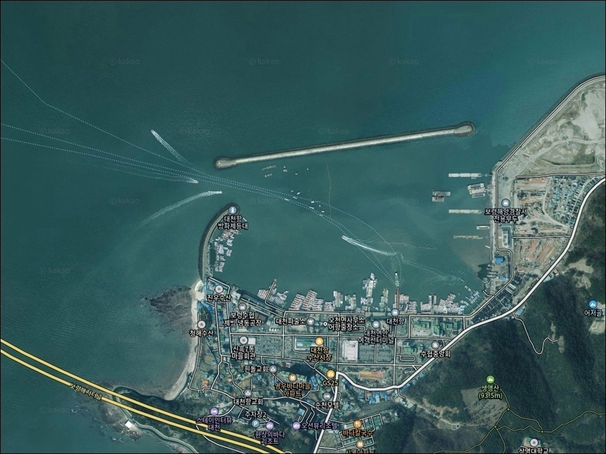
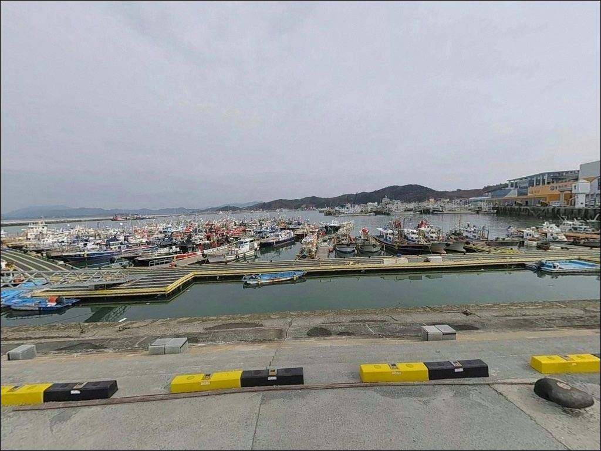
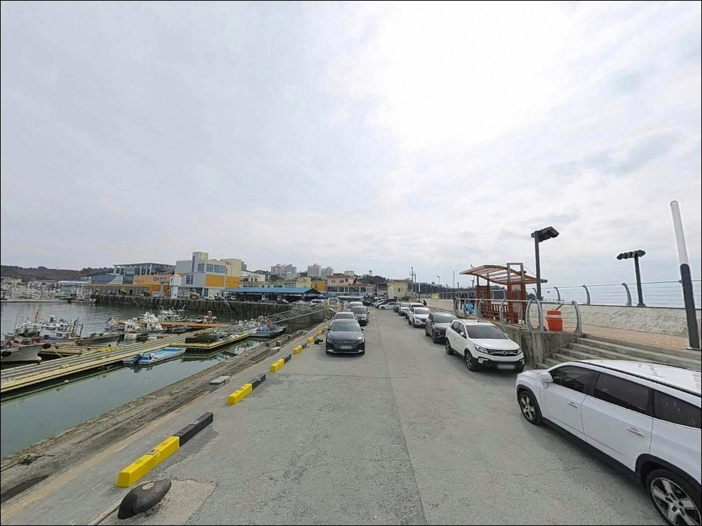
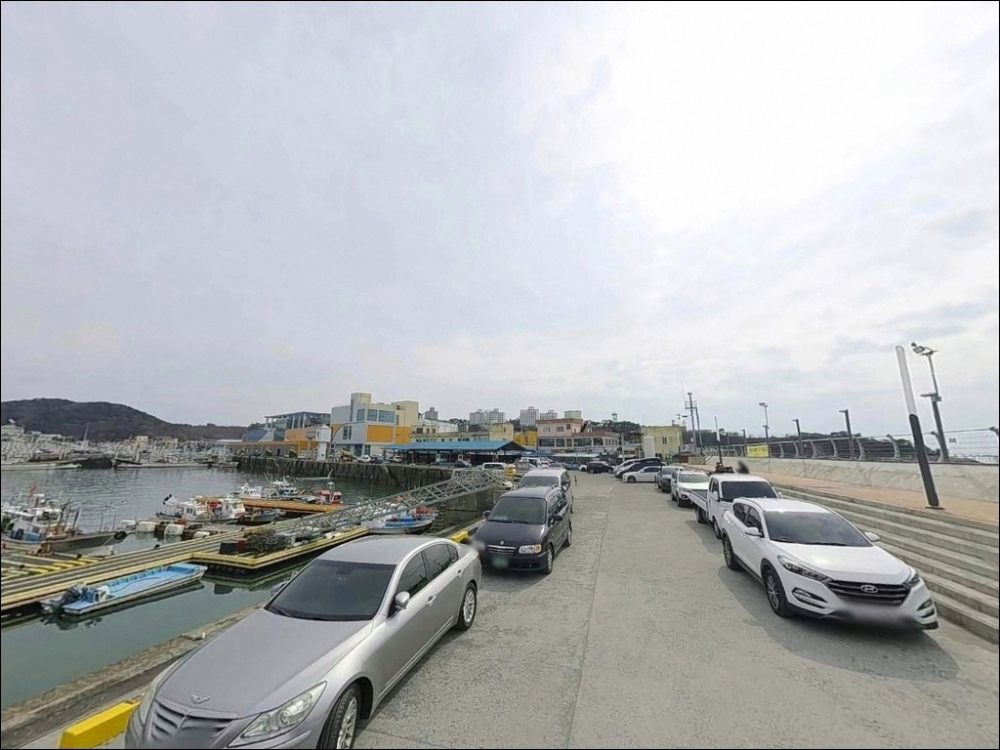
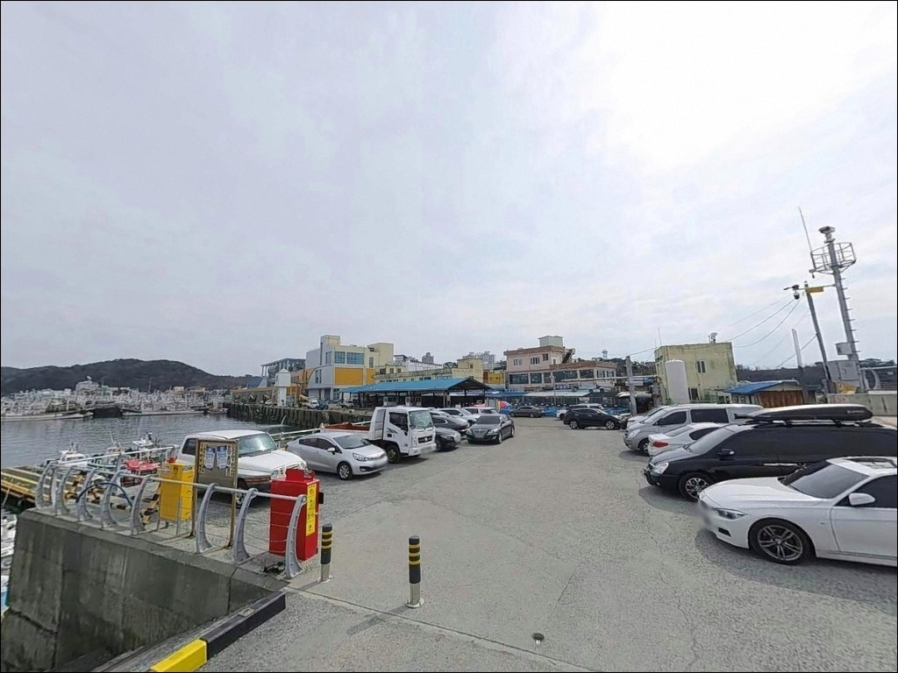
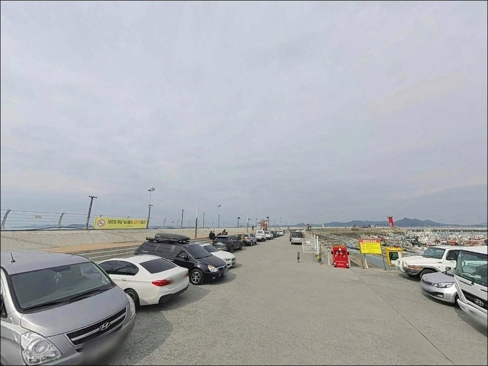
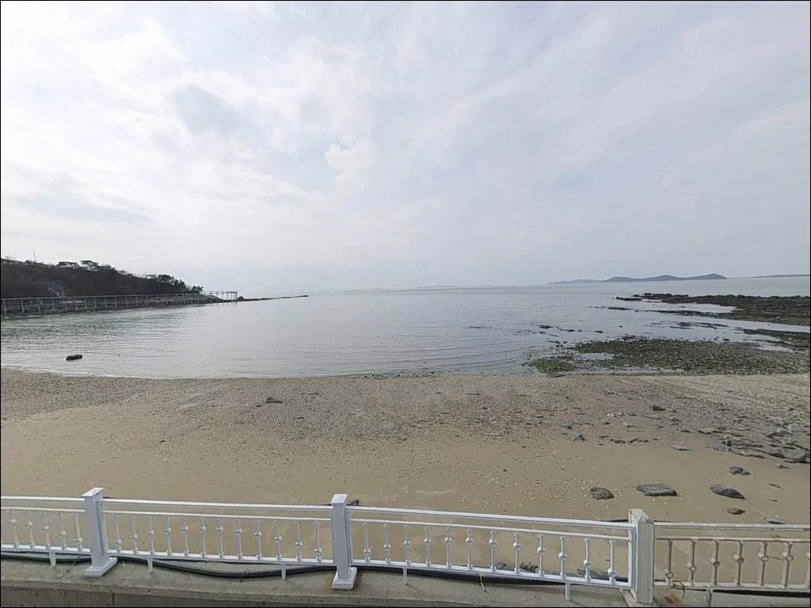
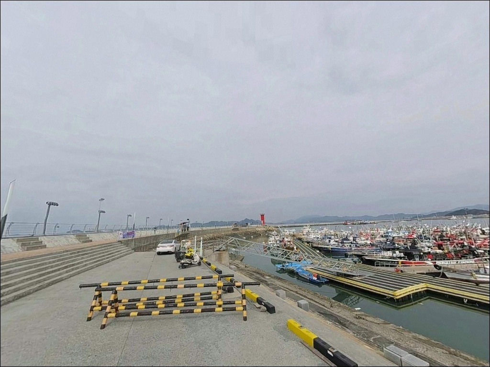
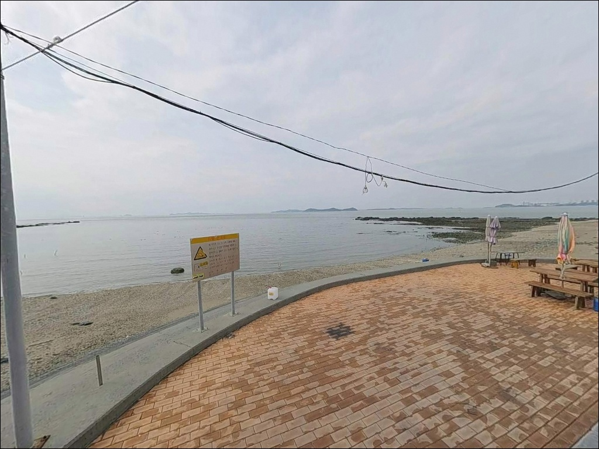

이 페이지에는 광고(제휴 링크 포함)가 있으며, 광고 링크를 통해 구매하면 운영자가 판매 수익 또는 수수료를 받을 수 있습니다. 포인트 사진: 카카오맵 스카이뷰·로드뷰. 이 페이지의 지도·사진 이미지는 카카오맵의 실제 서비스 이미지와 다를 수 있습니다.


대천항, 충남 보령시 자연의 여백을 느낄 수 있는 차박, 낚시 명소
포인트 안내
대천항
충남 보령시 신흑동 2245
신방파제 일부 구역에는 출입 통제 안내판이 설치되어 있어
현장 확인 없이 진입하면
낚시 자리를 잃는 상황이 생깁니다.
구역을 파악했다 해도
서해안 특성상 물때를 놓치면
채비 운용 자체가 어려워지는 조건으로 바뀝니다.
충남 보령시 신흑동,
대천해수욕장과 인접한 이 항구는
방파제 총연장 1,120m, 물양장 1,570m 규모의
서해 중부권 대표 항구입니다.
선상낚시 출항지로서의 기능이 강한 편이며,
외항 신방파제를 따라
도보 워킹 낚시도 함께 가능한 구조입니다.
이 글은
대천항의 방파제 구조와 진입 환경,
낚시 스타일별 포인트 조건에 집중합니다.
조황 단정이나 특정 어종 보장은
이 글의 범위에 포함되지 않습니다.

1. 진입 동선과 포인트 접근성
서해안고속도로 대천IC에서 대천항까지는
포장된 국도와 시내 도로를 경유하는 구조로,
진입 자체에 어려움이 없는 편입니다.
항 내부 도로 폭이 넓어
대형 차량과 캠핑카도 회차에 불편이 없는
구조입니다.
주차는 수산시장 인근 공영주차장 구역이
기본 후보입니다.
대천항 여객선터미널 인근에도
공영주차장이 있으며,
여름 성수기에는 대천해수욕장과 연계되는
유동인구가 많아
이른 시간 도착이 주차 여건을 결정합니다.
신방파제 진입 직전 구역까지
차량 접근이 가능한지는
현장 안내판으로 직접 확인해야 합니다.
항 내 어선 입출항 구역과
낚시 구역이 분리되어 운용되는 곳이므로
동선과 자리를 미리 파악하고 진입하는 것이
기본입니다.

2. 차박 환경과 야간 체류 여건
대천항은 수산시장, 횟집촌, 여객선터미널이
항구 구역 안에 밀집한 형태입니다.
관광객 유동인구가 상시 있고
야간에도 상업시설 조명이 꺼지지 않는 구조로,
조용한 차박 환경을 기대하기는 어려운 곳입니다.
야간 낚시 시야 확보에는 유리하지만
프라이버시는 매우 낮습니다.
방파제 쪽은 개방감이 있는 편이나
작업 차량과 낚시 방문객의 통행이
간헐적으로 이어집니다.
차박을 메인으로 삼기보다는
낚시 후 단기 체류 위주로 활용하는 방식이
현실적입니다.
차박 여건이 더 나은 대안을 찾는다면
대천해수욕장 인근 공영주차장을
후보로 볼 수 있습니다.
다만 공영주차장 내 야영 행위는
2024년 이후 관련 규정이 강화되어 있으므로
현장 고지문 확인이 먼저입니다.


3. 주변 편의시설 및 인프라 현황
대천항 수산시장은
충남 보령시 대천항로 334에 위치하며
1층에는 활어·어패류 70여 개 상점과
건어물 10여 개 상점이 있고,
2층에는 식당 10곳이 운영됩니다.
식재료 조달과 식사를 한 곳에서 해결할 수 있는
구조입니다.
항구 인근에 GS25 대천비치점(24시간)과
이마트24 대천봉산점(24시간)이 있으며,
주유소도 여러 곳 분포합니다.
보령해양경찰서 대천파출소가
항구 내 위치하고 있어
긴급 상황 시 접근이 빠른 편입니다.
낚시 전문점도 인근에 있어
현지에서 미끼와 채비를 보충할 수 있습니다.
새벽 출조 시에는 오픈 시간을
사전에 확인해 두는 편이 좋습니다.

4. 대천항 방파제에서 헛걸음 막는
출조 전 확인 항목
대천항을 찾기 전 가장 먼저 확인할 것은
물때입니다.
서해안은 조석간만의 차가 큰 해역으로,
사리 전후에는 조류가 강해져
채비 컨트롤이 어려워지는 구간이 생깁니다.
바다타임에서 보령 기준 물때를 먼저 확인하고
조금 전후 또는 정조 타이밍에 맞춰
출발 시각을 정하는 것이 기본 전략입니다.
출조 당일 아침 기상청 예보를 다시 한번 확인하는 것도
중요합니다.
외항 쪽은 바람과 파도 노출이 있는 편이라
기상 변화에 민감한 구간이 있습니다.
테트라포드 구간은 미끄럽고
파도 넘침 위험이 있으므로
구명조끼와 미끄럼 방지 신발은 필수입니다.
방파제 테트라포드 구간은 채비 손실이 잦습니다.
여분 채비를 여러 벌 갖춰 두는 편이 좋고,
야간 낚시 시에는 헤드랜턴 없이는
발판을 확인하기 어려운 구간이 있습니다.
2인 이상 동행이 기본 안전 원칙입니다.

5. 지형 기반 낚시 여건 분석
대천항은 남북 방향의 주 방파제와
동서 방향 추가 방파제가 교차하는
이중 방파제 구조입니다.
외항 쪽 신방파제는 외해 방향으로
길게 뻗어나가는 형태로,
방파제 끝단으로 갈수록 수심이 깊어지는
구간이 형성됩니다.
내항은 어선 정박 공간 중심 구조로
선박 이동이 잦고 낚시 여건이 제한적입니다.
외항 신방파제 끝단이 워킹 낚시의 핵심 자리이며,
외항 신방파제 끝단은 수심 변화가 큰 구간으로
원투낚시와 루어낚시 모두에 유효한 자리입니다.
연안 갯바위 구간(신흑동 946-24)도
포인트로 알려져 있지만
밑걸림이 심한 편입니다.
채비 손실을 감수하고 공략하거나
루어를 가볍게 운용하는 방식이 적합합니다.
출조 전 이 일대 최신 조황은
대천항 인근 낚시점이나 낚시 커뮤니티에서 먼저 검색해 보시기 바랍니다.


6. 포인트에 어울리는 낚시 스타일
원투낚시는 방파제 끝단에서
외항 방향으로 채비를 멀리 보내
바닥층을 공략하는 방식입니다.
수심이 깊어지는 끝단 구간은
조류가 흐르는 타이밍에
채비를 멀리 보내고 기다리는 방식이 유효합니다.
붕장어, 광어 등 바닥 어종을 기대해볼 수 있습니다.
루어낚시는 방파제 외항 쪽이나
갯바위 연안에서 농어·우럭을
탐색하는 방식으로 운용됩니다.
방파제 끝단과 갯바위 경계 구간은
루어에 반응이 살아날 가능성이 있는 구간으로
천천히 탐색하는 편이 맞습니다.
에깅과 주꾸미 루어는
가을 시즌에 기대해볼 만한 스타일입니다.
대천항 인근 해역은 주꾸미·갑오징어가
서식하는 지형 조건이 갖춰져 있어
가을 시즌 에깅 포인트로 자주 거론됩니다.
방파제 끝단 근처 수심 구간을 에기로 탐색하는
방식이 잘 맞습니다.
찌낚시는 내항과 외항 경계 구간
또는 방파제 꺾임 부근에서 운용하기 적합합니다.
숭어와 학꽁치를 기대해볼 수 있는 자리로,
조류가 적당히 흐르는 타이밍에 채비를 흘려 보내는 방식이
기본입니다.

7. 대안 포인트와 플랜 B 동선
대천항 여건이 여의치 않을 때
가장 먼저 고려할 대안은 오천항입니다.
보령시 오천면에 자리한 오천항은
국가어항으로 지정된 곳으로,
천수만 내만 구조 덕에
바람과 파도 영향이 상대적으로 적은 편입니다.
대천항보다 조용한 낚시 환경을 원할 때
첫 번째 이동 후보입니다.
무창포항은 보령 연안에서
방파제와 갯벌이 혼합된 지형 구조를 가진 포인트입니다.
대천항과 조류·기상 패턴이 유사한 편이라
날씨 자체가 나쁠 때는 이동의 실효성이
제한적일 수 있습니다.
맑은 날 대천항과 묶어서 방문하는 동선이
효율적입니다.
대천항 연안여객선을 이용하면
원산도·삽시도·외연도의
방파제·선착장으로 이동이 가능합니다.
육상 포인트가 혼잡하거나 여건이 맞지 않을 때
도서 포인트를 당일 일정에 추가하는 방식도
이 권역에서 활용하기 좋은 플랜입니다.

준비한 만큼 달라지는
서해 대표 항구 포인트
선상낚시 출조를 주목적으로 한다면
대천항은 충남 서해안에서
최적화된 출발점 중 하나입니다.
다양한 선단이 운영되고 있고
수산시장·24시간 편의점·주유소 등
인프라도 갖춰져 있는 항구입니다.
방파제 워킹 낚시를 계획한다면
물때 확인과 구역 파악이 먼저입니다.
신방파제 출입 통제 구역은
현장 안내판을 보고 자리를 잡아야 하고,
조석간만을 무시한 채 들어가면
어떤 채비를 써도 운용이 어려워지는 상황이 됩니다.
조용한 차박보다는 낚시 중심 출조에 맞는 포인트로,
원투·루어·에깅을 복합으로 즐기는 낚시인이라면
서해 중부권 출조 거점으로 손색이 없는 곳입니다.
수산시장에서 신선한 재료를 챙겨
방파제 끝에서 밤을 버텨내는 출조라면,
대천항이 기억에 남는 포인트가 될 수 있습니다.